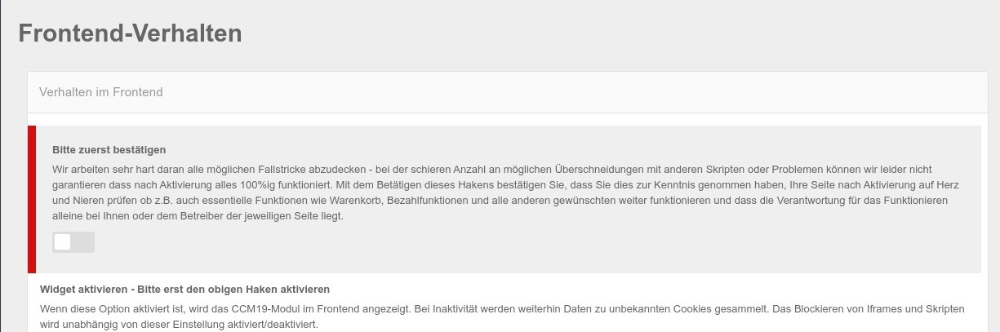
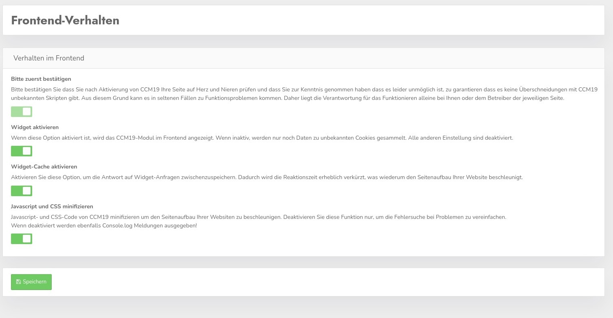

Hier können Sie eine Reihe von Einstellungen treffen die das Verhalten im Frontend der Seite beeinflussen die CCM19 nutzen. Die verfügbaren Einstellungen werden im folgenden erläutert.
Prüfen Sie Ihre Seite nach jeder Aktivierung oder Änderung auf Herz und Nieren ob z.B. auch essentielle Funktionen wie Warenkorb, Bezahlfunktionen und alle anderen gewünschten weiter funktionieren!!!
CCM19 arbeitet sehr hart daran alle möglichen und unmöglichen Fallstricke abzudecken - bei der schieren Anzahl an möglichen Überschneidungen mit anderen Skripten oder Problemen können wir leider nicht garantieren dass nach Aktivierung alles 100%ig funktioniert. Alleine die Kombinationsmöglichkeiten der uns bekannten Skripte mit den jeweiligen Einstellmöglichkeiten geht in die Milliarden.
Mit dem Betätigen dieses Hakens bestätigen Sie, dass Sie dies zur Kenntnis genommen haben und dass die Verantwortung für das Funktionieren alleine bei Ihnen oder dem Betreiber der jeweiligen Seite liegt.

Nach der Aktivierung sieht die Maske folgendermaßen aus und Sie können nun alle Einstellungen treffen.

Ist dieser Punkt deaktiviert, wird das CCM19 Modul im Frontend nicht angezeigt und die entsprechend hinterlegten Scripte werden nicht ausgeführt. Daten zu unbekannten Cookies und Scripten werden auch bei deaktiviertem Widget weitergesammelt.
Diese Funktion kann man nutzen um CCM19 auf der Webseite zu installieren, dann alles testen und erst wenn man alle Cookies und Skripte korrekt eingetragen hat CCM19 zu aktivieren.
Der Widget Cache ist standardmäßig aktiviert und läuft immer 24h. Der Cache trägt wesentlich zur Perfomance bei, ohne Cache dauert der Aufbau des Widgets deutlich länger. Je nach Server und Auslastung können das erhebliche Unterschiede sein.
Deaktivieren Sie den Haken nur dann wenn Sie etwas testen wollen und vergessen Sie nicht ihn wieder zu aktivieren!
Javascript- und CSS-Code von CCM19 minifizieren um den Seitenaufbau Ihrer Websiten zu beschleunigen. Deaktivieren Sie diese Funktion nur, um die Fehlersuche bei Problemen zu vereinfachen.